🎯 Hook – the cradle that only moves one ball
Lift one steel sphere of a Newton's cradle and release it. It stops dead on impact and the sphere at the far end flies off with almost exactly the speed the first one had. Lift two, and two leave. Nothing in between ever happens. Steel spheres are the best everyday example of an almost perfectly elastic collision — momentum and kinetic energy are both handed on virtually intact.
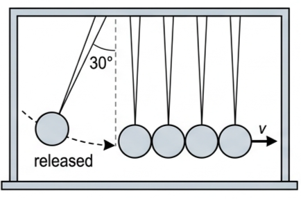
📐 Momentum: the quantity that is always conserved
When any two objects A and B interact, Newton's third law gives \(F_{\text{A}} = -F_{\text{B}}\). Using \(F = ma\) and \(a = (v-u)/t\), and noting that the time of the interaction is the same for both:
In words: (mass × change of velocity) for A = −(mass × change of velocity) for B. The momentum gained by A equals the momentum lost by B. Always — provided no external forces act.
Momentum is a vector quantity and its direction is always important. Linear momentum remains constant unless the system is acted upon by a resultant external force.
A system is the object(s) being considered and nothing else; an isolated system is one into which matter and energy cannot flow in or out. Everything apart from the system is the surroundings (or environment). Choosing the system well is what makes a conservation law usable: for a car crash we normally take the system to be just the two cars, ignoring the air and the road, which gives a quick and reasonably accurate prediction for what happens immediately after impact.
This follows from \(F = ma = m(v-u)/t = (mv-mu)/t\). It is the more generalised form: it allows for a changing mass, whereas \(F = ma\) assumes the mass is constant. Rockets are the standard application.
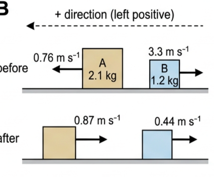
💥 Collisions, explosions, and the words for them
In physics a collision is any event in which two or more objects move towards each other and exert forces on each other for a relatively short time — not only the accidental, high-force events of everyday speech. An explosion is any event in which internal forces within a stationary system push separate parts of the system apart; again, much less dramatic than everyday usage.
Conservation of momentum alone is never enough to predict the outcome. Two tennis balls colliding behave completely differently from two cushions colliding, and momentum cannot tell them apart. You always need extra information: either the type of collision, or what happened to one of the objects.
That extra information is energy. Any moving object has kinetic energy, \(E_{\text{k}} = \tfrac12 mv^2\), and during a collision some or all of it is transferred between the objects. Typically some — perhaps most — is transferred to the surroundings as thermal energy and maybe sound.
The two extreme cases:
Physicists use macroscopic for events observable with the unaided eye and microscopic for events on the molecular, atomic or subatomic scale. It was only when scientists realised that matter consists of atoms and molecules that could not be seen that many everyday observations could be explained.
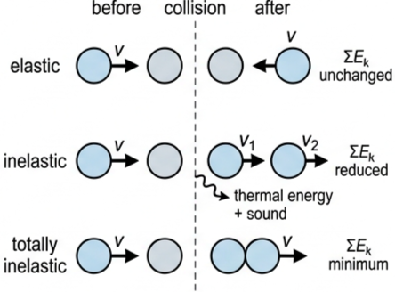
It is easy to find examples where all the kinetic energy appears to have been lost — a student jumping down onto the floor, for instance. The student has had a totally inelastic collision with the Earth, but the change to the motion of the Earth is insignificant and unobservable.
⏱️ Impulse and the force–time graph
Many forces only act for a short time, \(\Delta t\). The longer a force acts, the greater its possible effect, so the concept of impulse, \(J\), becomes useful. If the force varies during the interaction, use its average value.
Rearranging \(F = \Delta p / \Delta t\) gives \(F\Delta t = \Delta p\), so:
An applied external impulse on an isolated object results in a change of momentum numerically equal to the impulse. The units N s and kg m s⁻¹ are equivalent to each other.
In simple calculations we may assume the force is constant, or that the average force is half the maximum force. For more accurate work that is not good enough and we need to know how the force varies during the interaction — shown by a force–time graph.
📈 Graphs every examiner uses
| Graph type | Axes (X, Y) | Shape | What to read |
|---|---|---|---|
| Force–time (real impact) | Time / ms · Force / N | Single hump: rises steeply, peaks, falls back to zero | Area under the curve = impulse = \(\Delta p\). Estimate it with an equal-area rectangle; its height is \(F_{\text{av}}\) |
| Force–time (idealised) | Time · Force | Horizontal line of height \(F\) over a width \(\Delta t\) | \(J = F\Delta t\) read directly as the rectangle's area |
| Momentum–time | Time / s · \(p\) / kg m s⁻¹ | Straight line for a constant force | Gradient = resultant force, since \(F = \Delta p/\Delta t\) |
| Velocity–time for two colliding trolleys | Time / s · \(v\) / m s⁻¹ | Two lines with a sharp step at the moment of impact | \(u\) and \(v\) either side of the step; feed them into \(\sum mu = \sum mv\) and compare \(\sum \tfrac12 mv^2\) |
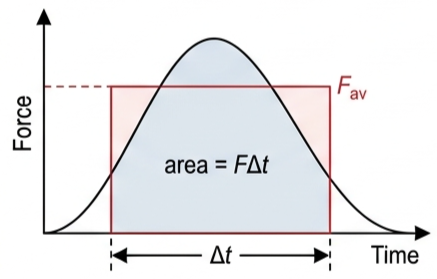
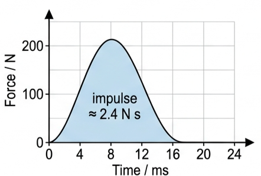
✍️ Worked example 1 – a head-on collision (A2.10)
An object A of mass 2.1 kg was moving to the left with a velocity of 0.76 m s⁻¹. At the same time, object B of mass 1.2 kg was moving in the opposite direction with a velocity of 3.3 m s⁻¹. Discuss what happens after the collision. Then: if after the collision object A had a velocity of 0.87 m s⁻¹, what happened to object B?
With left positive:
\(p_{\text{A}} = 2.1 \times (+0.76)\)
\(= +1.60\ \text{kg m s}^{-1}\)
\(p_{\text{B}} = 1.2 \times (-3.3)\)
\(= -3.96\ \text{kg m s}^{-1}\)
\(= 1.60 + (-3.96)\)
\(= -2.36\ \text{kg m s}^{-1}\) (to the right).
Conservation of momentum says this is unchanged after the collision. Using momentum before = momentum after:
\([2.1 \times (-0.87)] + 1.2v_{\text{B}} = -2.36\)
The negative sign means B is moving in the negative direction (to the right) at 0.44 m s⁻¹. Note that momentum alone could not have told us this: we needed to be told what happened to A. The alternative extra piece of information would have been the type of collision.
✍️ Worked example 2 – trolleys, energy, and the totally inelastic case (A2.11)
A 2.1 kg trolley moving at 0.82 m s⁻¹ collides with a 1.7 kg trolley moving at 0.98 m s⁻¹ in the opposite direction. After the collision, the 1.7 kg trolley reverses direction and moves at 0.43 m s⁻¹. (a) Discuss what happened to the other trolley. (b) Without making any calculations, comment on the difference in total kinetic energy before and after the collision. (c) If the collision had been totally inelastic, what would have happened after the collision?
\((2.1 \times 0.82) + (1.7 \times -0.98)\)
\(= (2.1 \times v) + (1.7 \times 0.43)\)
\(0.056 = 2.1v + 0.731\)
\(v = -0.32\ \text{m s}^{-1}\)
The − sign shows us that this trolley also reverses its direction of motion.
(c) The trolleys stick together, so:
\(0.056 = 3.8v\)
\(v = +0.015\ \text{m s}^{-1}\)
The + sign shows they move in the original direction of the 2.1 kg trolley. The combined trolleys move very slowly, so there has been a considerable loss of kinetic energy.
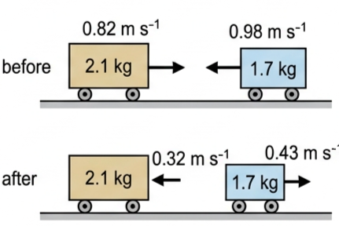
✍️ Worked example 3 – impulse from a constant force (A2.16)
A constant force of 12.0 N acts on a stationary mass of 0.620 kg for 0.580 s. (a) Calculate the impulse applied to the mass. (b) Calculate the change of momentum of the mass. (c) Calculate the final velocity of the mass.
\(= 12.0 \times 0.580 = 6.96\ \text{N s}\)
(b) \(\Delta p = 6.96\ \text{kg m s}^{-1}\) (or N s)
(c) \(\Delta p = m\Delta v\)
\(6.96 = 0.620 \times \Delta v\)
✍️ Worked example 4 – reading impulse off a graph (A2.17)
Figure 5 shows how the force on a 57 g tennis ball moving at 24 m s⁻¹ to the right varied when it was struck by a racket moving in the opposite direction. (a) Estimate the impulse given to the ball. (b) Calculate the velocity of the ball after being struck. (c) Explain why a racket with looser strings could return the ball with greater speed. (d) Suggest a disadvantage of looser strings.
\(J \approx 200 \times (12 \times 10^{-3})\)
\(= 2.4\ \text{N s}\) to the left.
\(\Delta v = \dfrac{2.4}{0.057} = 42\ \text{m s}^{-1}\) to the left
\(v_{\text{final}} - v_{\text{initial}} = -42\)
\(v_{\text{final}} - (+24) = -42\)
(c) The time of contact with the ball, \(\Delta t\), will be longer with looser strings, so the same force will produce a greater impulse (change of momentum).
(d) There is less control over the direction of the ball.
💨 Explosions, recoil and propulsion
A laboratory 'explosion' is easy to arrange: a blow from a hammer releases springs which push two previously stationary trolleys apart. If the trolleys are identical they move apart with equal speeds. If the mass on one side is doubled, the speeds are in the ratio 2:1 — the more massive trolley moves more slowly.
Firing a gun or a cannon is a more dramatic example. Since there is zero momentum to begin with, the momentum of the bullet or cannon ball must be equal and opposite to the momentum of the gun, so that the total momentum after firing is also zero. The word recoil describes this backwards motion.
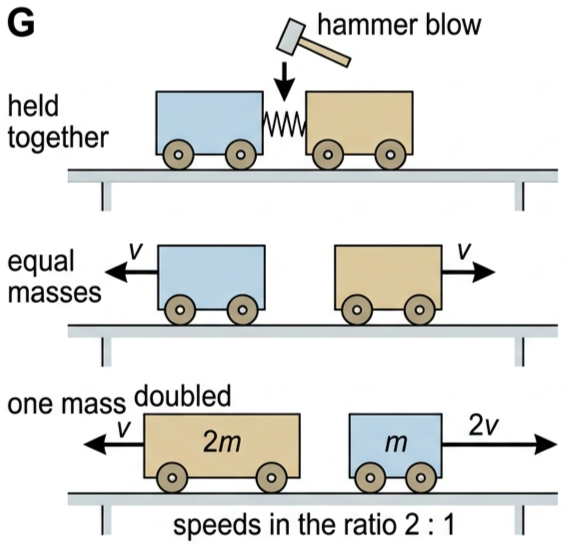
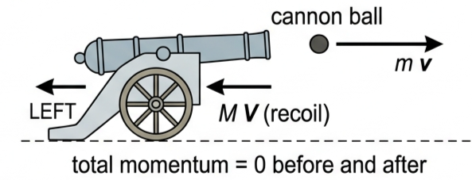
Turn this round and you have propulsion: to propel — provide a force for an intended motion — we create momentum in the opposite direction. Restated with Newton's third law: if we want a force to move us to the right, we exert a force on the surroundings to the left. A boat is pushed forward by pushing water backwards with an oar or a propeller; the momentum of the boat forwards is equal and opposite to the momentum of the water backwards.
A propeller works for a small aeroplane too, but it must be much larger and rotate faster, because the density of air is much less than that of water. A jet engine takes in surrounding air, burns vaporised fuel in it, and ejects hot exhaust gases at the back with considerable momentum — much greater than the momentum of the air input. The difference is equal and opposite to the forward momentum given to the aircraft. A rocket engine uses the same principle but travels where there is little or no air, so it carries its own oxidant on the vehicle.
\(= 3.5 \times 10^{7}\ \text{N}\). This is exactly the case where \(F = ma\) fails and \(F = \Delta p/\Delta t\) is needed, because the mass is changing.
\(0 = (1.54 \times v) + (0.022 \times 250)\)
\(v = -3.6\ \text{m s}^{-1}\). The − sign shows the gun moves in the opposite direction to the bullet's velocity.
🌍 Real-world: crumple zones and why cars are built to break
A crash gives the car a fixed change of momentum: it has to stop. Since \(J = F\Delta t = \Delta p\), the only way to reduce the force on the occupants is to stretch out \(\Delta t\). Crumple zones, airbags and seatbelts all do exactly that. Force–time graphs are especially useful when analysing impacts in road accidents and in sports, for the same reason.
🚀 HL Extension – collisions and explosions in two dimensions
For collisions or explosions in two dimensions, the law of conservation of momentum can be applied in two perpendicular directions. Treat the interacting objects as point particles and resolve every velocity first:
The same for object 2 with \(\theta_2\). Then write one conservation equation for \(x\) and one for \(y\). Choosing the direction in which the initial momentum is zero usually gives the simpler equation.
Challenge: in a two-dimensional collision, must the two final velocity vectors always lie on opposite sides of the original line of motion? (Answer: yes — the perpendicular components must cancel, since the total momentum perpendicular to the original motion started at zero.)
🚀 HL worked example 5 – 2-D collision (A2.13)
Two objects collide as in Fig 9, with \(m_2\) stationary before the collision. Let \(m_1 = 0.50\) kg, \(m_2 = 0.30\) kg and \(u_1 = 4.0\) m s⁻¹. If the angles were \(\theta_1 = 36.9^\circ\) and \(\theta_2 = 26.6^\circ\), determine the value of \(v_2\) if \(v_1\) was 2.0 m s⁻¹.
\(0 = m_1v_1\sin\theta_1 + m_2v_2\sin\theta_2\)
\(0 = 0.600 + 0.134v_2\)
Alternatively, and less simply, in the \(x\)-direction:
\(m_1u_1 = m_1v_1\cos\theta_1 + m_2v_2\cos\theta_2\)
\((0.50 \times 4.0) = (0.50 \times 2.0 \times \cos 36.9^\circ)\)
\(\qquad + (0.30 \times v_2 \times \cos 26.6^\circ)\)
\(2.0 = 0.800 + 0.268v_2\)
\(v_2 = 4.5\ \text{m s}^{-1}\), as before.
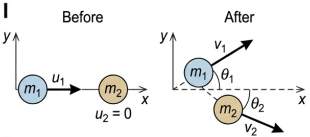
🚀 HL worked example 6 – a three-way explosion (A2.14)
A stationary small mass of mass 5.0 g explodes into three particles. Particle A, of mass 1.5 g, moves with a velocity of 23 m s⁻¹ in a direction we will call the \(x\)-direction. Particle B, of mass 2.0 g, moves with a velocity of 18 m s⁻¹ at 60° to the first. Determine what happened to the third particle, C.
\(v_x = 18\cos 60^\circ = 9.0\ \text{m s}^{-1}\)
\(v_y = 18\sin 60^\circ = 15.6\ \text{m s}^{-1}\)
C's mass \(= 5.0 - 1.5 - 2.0 = 1.5\) g.
\((1.5 \times 23) + (2.0 \times 9.0)\)
\(= 52.5\ \text{g m s}^{-1} = -p_{\text{C}x}\)
in the \(y\)-direction
\(0 + (2.0 \times 15.6)\)
\(= 31.2\ \text{g m s}^{-1} = -p_{\text{C}y}\)
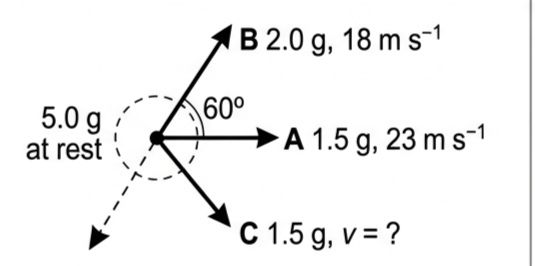
🔬 Significant figures in momentum calculations
An answer should not have more significant figures than the least precise of the data used in the calculation. Significant figures are all the digits used in data to carry meaning, whether before or after a decimal point, including zeros.
Zeros can be ambiguous. "100 km to the nearest airport" might mean approximately 100 km or exactly 100 km — which is why scientific notation (\(a \times 10^{b}\), with \(1 < a < 10\) and \(b\) an integer) is useful: \(1.00 \times 10^{2}\) km makes it clear there are three significant figures, whereas \(1 \times 10^{2}\) km represents much less precision.
For example, if a mass of 583 g changed velocity by 15 m s⁻¹ in two seconds, the resultant force was:
But the time was given to one significant figure, so the answer should be \(F = 4\) N. That can seem unsatisfactory — but a time quoted as 2 s simply means more than 1.5 s and less than 2.5 s. A time of 1.5 s would give 5.8 N; a time of 2.5 s would give 3.5 N. Had the time been 2.0 s, the quoted force should be 4.4 N. Had it been 2.00 s, the answer should still be 4.4 N, because the velocity was only given to two significant figures.
🤔 TOK – a clockwork universe?
What kinds of explanations do natural scientists offer?
Everything is made of particles, and it has been suggested that if we could know everything about the present state of all the particles in a system — their positions, energies, movements and so on — then maybe we could use the laws of classical physics to predict what will happen to them in the future. The Universe would then behave like a mechanical clock. If these ideas could be expanded to include everything, the future of the Universe would already be decided and predetermined, and the many apparently unpredictable events of everyday life and human behaviour, like you reading these words at this moment, would just be the laws of physics in disguise.
However, we now know that the laws of physics as imagined by humans are not always so precisely defined, nor as fully understood, as physicists of earlier years may have believed. The principles of quantum physics and relativity in particular contrast with the laws of classical physics. Furthermore, in a practical sense, it is totally inconceivable that we could ever know enough about the present state of everything in the Universe in order to use that data to make detailed future predictions.
⚠️ Trap corner – common mistakes
| Misconception | Correct view |
|---|---|
| Momentum is conserved only in elastic collisions | Momentum is conserved in every collision and explosion with no resultant external force. It is kinetic energy that distinguishes elastic from inelastic |
| Kinetic energy is conserved in a collision | Only in an elastic collision. Elastic collisions are a theoretical ideal for macroscopic objects and never happen perfectly; they are common for microscopic particles |
| "Totally inelastic" means everything stops | It means the objects stick together and move off as one mass. Their common velocity is only zero if the total momentum was zero |
| Momentum is destroyed when a ball thrown upwards slows down | The Earth is part of the system. The momentum lost by the ball is gained by the Earth; because the Earth's mass is enormous, its change of velocity is unobservable |
| \(F = ma\) works for a rocket | The rocket's mass changes as it burns fuel, so use \(F = \Delta p/\Delta t\), giving thrust \(= (\Delta m/\Delta t)v\) |
| Crumple zones "absorb the force" | They increase the collision time \(\Delta t\); for the same \(\Delta p\) the average force is therefore smaller |
Complete the statements:
✓ \(4.1 \times 1.9 = 9.7v\)
✓ \(v = 0.80\ \text{m s}^{-1}\) to the right (in the original direction of the 4.1 kg object).
\(= 128\,600\ \text{kg m s}^{-1}\)
✓ \(128\,600 = 4900v + (1300 \times 20)\)
✓ \(v = 21\ \text{m s}^{-1}\) in the original direction.
✓ \(0.00240v = 0.65240 \times 0.960\)
✓ \(v = 261\ \text{m s}^{-1}\).
✓ If the system is taken as ball + Earth, momentum is conserved: the momentum lost by the ball is gained by the Earth in the opposite direction.
✓ The Earth's mass is so enormous that its change of velocity is far too small to observe.
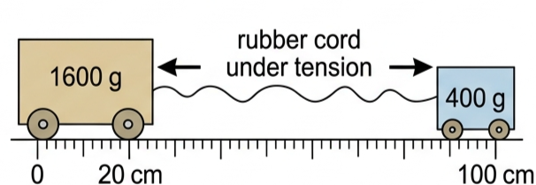
✓ Both travel for the same time, so the distances are also in the ratio 1 : 4.
✓ \(d + 4d = 100\ \text{cm}\), so \(d = 20\) cm: the 1600 g trolley moves 20 cm from the 0 mark and they meet at the 20 cm mark.
✓ (b) The total momentum is zero before the collision, so it must be zero afterwards.
✓ Stuck together, the combined 2000 g mass is therefore stationary — all the kinetic energy gained from the cord is transferred to the surroundings.
\(= 0.359 - 0.196 = 0.164\ \text{kg m s}^{-1}\)
✓ Combined mass \(= 0.719\) kg, so \(0.164 = 0.719v\)
✓ \(v = 0.228\ \text{m s}^{-1}\) (22.8 cm s⁻¹) in car A's original direction.
\(= 3.24 - 2.11 = 1.13\ \text{kg m s}^{-1}\)
✓ After: the 0.54 kg ball rebounds in the positive direction: \(1.13 = 1.2v + (0.54 \times 6.0)\)
✓ \(v = -1.8\ \text{m s}^{-1}\), i.e. 1.8 m s⁻¹, reversed.
✓ (b) Check the kinetic energy. Before: \(\tfrac12(1.2)(2.7)^2 + \tfrac12(0.54)(3.9)^2 = 8.5\) J.
✓ After: \(\tfrac12(1.2)(1.8)^2 + \tfrac12(0.54)(6.0)^2 = 11.6\) J.
✓ The kinetic energy would have increased, which is impossible in a collision with no energy input — so the quoted final speed of 6.0 m s⁻¹ must be too large (a measurement or data error).
✓ Kinetic energy before \(= \tfrac12(2.0)(0.80)^2 + \tfrac12(1.0)(2.20)^2 = 3.1\) J.
✓ Kinetic energy after \(= \tfrac12(2.0)(0.60)^2 + \tfrac12(1.0)(0.60)^2 = 0.54\) J — a loss of about 82%.
✓ Steel-wheeled trolleys that rebound briskly off each other lose only a small fraction of their kinetic energy; losing 82% while both trolleys bounce back at an appreciable speed is not credible, so at least one measured speed must be wrong.
✓ \(v = 0.41\ \text{m s}^{-1}\).
✓ (b) Total momentum stays zero: \(65v = 2.3 \times 0.80\)
✓ \(v = 0.028\ \text{m s}^{-1}\) (2.8 cm s⁻¹) in the opposite direction to the hammer.
✓ (c) She must gain an equal and opposite momentum — throw another object of the same momentum in the direction she is now drifting,
✓ or catch a returning object / use a gas thruster, so that the total momentum change cancels her drift.
✓ \(m = 1050 / 0.30\)
✓ \(m = 3500\ \text{kg}\).
✓ (b) With no resistance from the water, the canoe continues to move at that constant velocity while the ball travels through the air.
✓ (c) When the ball lands and stops relative to the canoe, its momentum is transferred back, cancelling the canoe's momentum: the canoe stops.
✓ The canoe has been displaced from its original position, but its final velocity is zero — a system cannot propel itself by internal forces alone.
\(= 0.090\ \text{kg m s}^{-1}\), \(p_y = 0\).
✓ After, for the 200 g mass: \(p_x = 0.200 \times 0.10 \times \cos 30^\circ = 0.0173\), \(p_y = 0.200 \times 0.10 \times \sin 30^\circ = 0.0100\).
✓ For the 500 g mass: \(p_x = 0.090 - 0.0173 = 0.0727\), so \(v_x = 0.145\ \text{m s}^{-1}\).
✓ \(p_y = -0.0100\), so \(v_y = -0.0200\ \text{m s}^{-1}\).
✓ Speed \(= \sqrt{0.145^2 + 0.0200^2} = 0.15\ \text{m s}^{-1}\) at about 8° to the original line, on the opposite side of it to the 200 g mass — so the 500 g mass has reversed its direction of travel.
✓ \(x\): \(0.25 \times 8.5 = 2.125\ \text{kg m s}^{-1}\); \(y\): \(0.45 \times 5.6 = 2.52\ \text{kg m s}^{-1}\).
✓ Third part: \(p_x = 2.0 - 2.125 = -0.125\), \(p_y = -2.52\ \text{kg m s}^{-1}\).
✓ \(p = \sqrt{0.125^2 + 2.52^2} = 2.52\ \text{kg m s}^{-1}\)
✓ \(v = 2.52 / 0.30 = 8.4\ \text{m s}^{-1}\), as required.
\(= 3.8 \times 10^{7}\ \text{N}\)
✓ Weight \(= 2.7\times10^{6} \times 9.8 = 2.6 \times 10^{7}\ \text{N}\), so the resultant force \(= 1.2 \times 10^{7}\ \text{N}\).
✓ \(a = 1.2\times10^{7} / 2.7\times10^{6} = 4.3\ \text{m s}^{-2}\).
✓ (b) The rocket's mass falls continuously as fuel is burned and ejected, so for the same thrust \(a = F/m\) increases.
✓ In addition, the weight decreases as \(g\) falls with altitude and air resistance decreases as the air thins, both increasing the resultant force.
✓ The hot exhaust gases are ejected at the back of the engine with considerable momentum, much greater than the momentum of the air input.
✓ The difference in momentum is equal and opposite to the forward momentum given to the aircraft (Newton's third law / conservation of momentum).
✓ A rocket engine has no air intake: it carries an oxidant on the vehicle together with the fuel, so it works where there is little or no air.